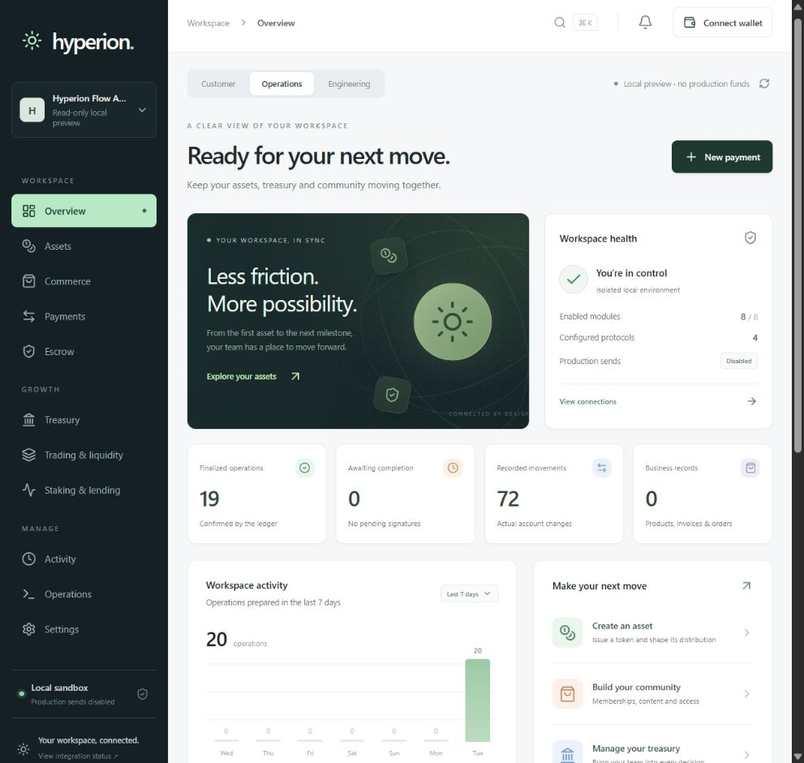
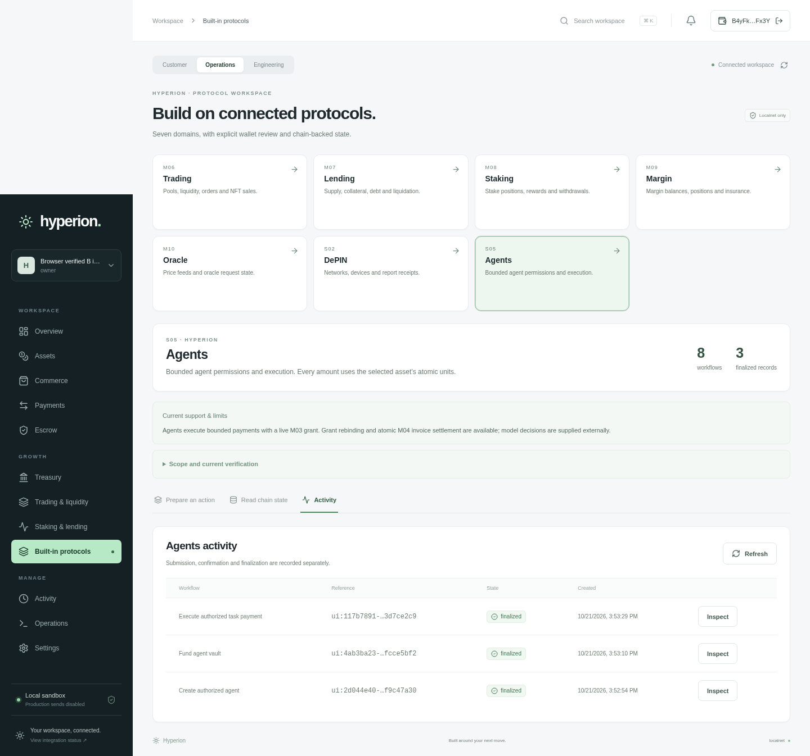

Hyperion
Three engineering projects. One connected application.
An independent application integrating the three projects through pinned SDKs, contract interfaces and services, with customer, operations and engineering views.
React / TypeScript / Node.js / Solana / Protocol Integration

Bring multiple protocols into a coherent experience while preserving real permissions, transaction review, money precision, domain states and recovery semantics.
Owns product structure, interfaces, business adapters, cross-project integration and verification for the independent application. Underlying projects remain separate, and external protocols retain their authorship.
Full implementation scope
F01 · Assets & distribution
SPL, selected Token-2022, NFTs, distribution and claims, plus DBC launch and migration adapters.
F02 · Commerce
Memberships, private content, access rights, revenue splits, refunds and fixed-price NFT trading.
F03 · Payments
Invoices, single, batch and recurring payments, plus bidirectional CCTP state handling.
F04 · Escrow
Uses Project 1 terms, delivery, approval, refunds and dispute rules.
F05 · Governance
Squads approvals and permissions; Realms proposals, voting and execution.
F06 · Trading & liquidity
Jupiter adapter, Meteora DAMM v2 and DLMM positions, fees and liquidity.
F07 · Staking & lending
Jito deposit and full exit; selected Kamino market and risk-view adapters.
F08 · Engineering & operations
Business audit, tracking, exports, notifications, authorized tasks, APIs and recovery.
Scenarios & perspectives
Customer view
Asset holders, buyers, members, voters and providers.
Operations view
Management, finance, workspace permissions, approvals and reconciliation.
Engineering view
APIs, tasks, transaction states, indexing, notifications and recovery.

Verification record
Recorded results, with contextLocal workflows
Real local-chain records cover assets, commerce, payments, governance, Meteora, B-side domains and proof claims.
Real Devnet wallets
Recorded flows include SPL issuance and airdrop, authorized recurring payment, full Jito exit and a normal escrow order.
Application & recovery
The October 31, 2026 checkpoint records 279 application and 17 index checks passing, plus isolated builds and mobile layout.
Current boundaries
Fixed public acceptance U01–U11 and external gates E01–E03 are not all closed. Jupiter, Kamino and CCTP adapters do not imply completed funded lifecycles. Mainnet production readiness is not claimed.
Materials reviewed: 16 November 2026 / Verification checkpoint: 2026-10-31
A recorded
walkthrough.
English narration, October 13, 2026, using isolated local test wallets; reflects the features at recording time.
Have something
in mind?
sa121812138@gmail.comA brief outline, your current stage, and a timeline
are a good place to start.